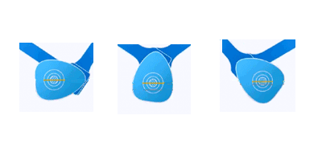
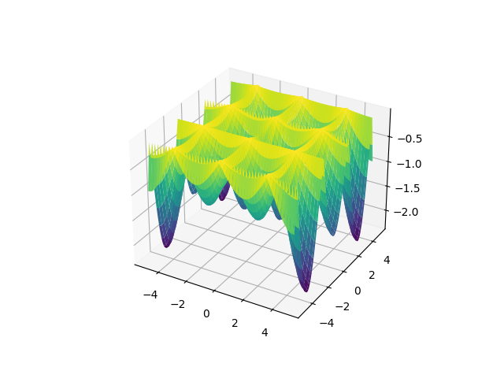
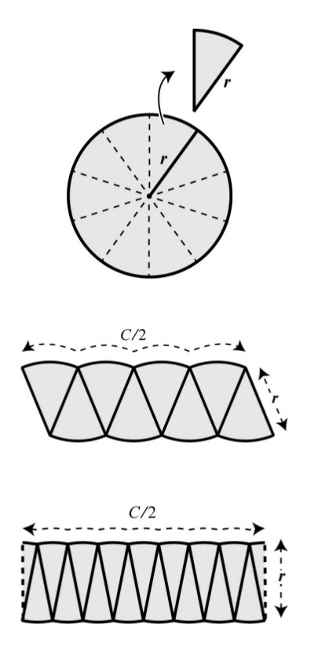

Good Reductionism and Nonlinear Power
Das Ganze ist etwas anderes als die Summe seiner Teile (the whole is something else than the sum of its parts) -- Kurt Koffka
I hear criticisms using the words "oh but that's too reductionist" on analysis' that involve breaking an issue into individual components.. This criticism is usually misguided and I will try to outline why. Such criticism misses the interaction, and in the reverse direction, the power that results due to the combination of those pieces, that gave us much of the modern world today. It's key we understand both sides of this equation.
Systems
There are many systems, some mechanical, some social. In such systems we see pieces, but how are they held together? How were they added? Linear addition of components is uninteresting.. They are simple to see, and frankly will not achieve much beyond their domain. Twice of something that do X, can do 2X. I have A, add B, I get A+B. There is nothing to this. The analysis and creation of such mechanisms yield average results.
However when scientists analyze interesting systems, or engineers build them, what they look for is individual components, yes, but also the nonlinear ways they can interact. It is this interaction that leads to power.
Let's look at the way the V-engine shaft turns,

It is a simple rotation. One shaft. There are two other rods connected to it. But look at how that connection is made, at different angles. Rotation, easy. Connecting, easy. Rods, easy. But connect two, to the same shaft, at angle, gives you this,
We just created an orderly movement, one push after another, and guaranteed certain force, using simple components.
What if I wanted to create a push action at different intervals, not just regular?
I immediately try to think of simple constituents, and try to achieve nonlinearity through their interactions.. Simple rotation. Simple rod. But the rotating object is not round, has certain nonlinear shape which is how it interacts with the rod, and that in turn gets pushed in an interval I want.
{kind=link}
Another subject, one I studied closely, optimization. In this subject, we run our algorithms on funky 3D shapes that are famous for having many ups and downs, we want tricky shapes bcz the minima searching algs usually looks to its nearby region, we want to see if they will "fall" into one of those holes and get stuck there. So the subject over the years zoned in to a few of those funky shapes as example shapes that are the result of short, simple formulas (great, easy to code). Here is one of them, called the Hölder table function,
import pandas as pd
import numpy as np
import matplotlib.pyplot as plt
from mpl_toolkits.mplot3d import Axes3D
from matplotlib import cm
L = 5
x = np.linspace(-L, L, 100)
y = np.linspace(-L, L, 100)
X, Y = np.meshgrid(x, y)
Z = -np.abs( np.sin(X)*np.cos(Y)*np.exp(np.abs( 1- np.sqrt(X**2+Y**2)/np.pi )) )
fig = plt.figure()
ax = fig.gca(projection='3d')
surf = ax.plot_surface(X, Y, Z, cmap=cm.viridis)
plt.savefig('out.png')

Its formula, for $f(x,y)$
$$ - \bigg| \sin(x) \cos(y) \exp \left( \bigg| 1 - \frac{\sqrt(x^2+y^2)}{\pi} \bigg| \right) \bigg| $$
Short and sweet. There is a boring cosine, boring sine, x and y, booring, and a few additions.. But pay attention to how are these components put together; Nonlinearly. Sine times cosine, squared x and y, only then added. The result is "the table" we see, nothing that we could have guessed by just looking at the individual components.. The whole is something else other than the sum of its parts, entirely (by sum of course I mean linear sum)
Music
Same goes with music. Here are the components that make up K-Pop band BTS's song Dynamite, written by the British composer David Stewart [2].
Simple, boring tracks. But they are crafted in a certain way, to fit in a certain way, so when they are finally placed together, the result,
Fantastic. Or I remember when I first heard to Stevie Wonder's Supersitition, I was similarly impressed to notice its tracks, its components, made up the whole song, remarkably genius work.
Social Implications
In the case of social systems the components are humans themselves or human groups. Democracies deliver better results than authoracies, bcz they allow individual groups (parties) to form around possible solutions, which then come together in myriad ways to govern. This process was in fact the perfect example of nonlinear interactions of simple, focused components.. I join a party arguing for high taxes, some in low, our oscillations in and out of gov, sometimes together, lands us in an optimal solution. We pursued our simple, focused view, came together in certain ways that led us somewhere: an acceptable solution.
We have to admit the West has been a good follower of these ideas. The East, with the exception of perhaps India, and a few Asian democracies, still does not get IT. China fears the components (ie its citizens), how they can come together, so opresses their interactions, and the human elements themselves. These countries are stuck in First Wave agrarian mentality, where X + X got you 2X. More land, more peasants, more produce. The-whole-large-than-the-sum-of-parts is ignored which is a genuine source of power. This is how the British came to dominate the seas in the 18/19th centuries, their biggest trick was combining a clock, with a reference point and simple math that gets you the correct longitude, with simple latitude info gave te ships their precise locations on Earth. Developing countries wld be served well to understand this process. Many a times "copy the final product" approach is chosen, where the final sum is bizarrely divvied up. In essence this way ends up creating that weird uber-guitar just for one song, that when one of its hundreds of strings is plucked, will play the 50th second of Superstition, with all its sounds. A ridiculuous concoction, to be sure, but does not stop some from trying.
Addend 1
Philosophers stumbled upon on the idea at times in the East; Ghazali said "you combine something with something else, you get a third thing". He was aware of combinations, but did not offer further formulation. His pin factory studies seperate competencies, types of workers working on different part of a product, but he thought overall efficiency was achieved because same people working on the same type of problem made them faster thereby improving the overall efficiency.. This means he missed the point entirely, the power lies not simple addition of the components however good they might be, it lies in their interactions, how they jell with another, and the myriad ways they can produce a solution.
Addend 2
The West can experience misplaced fear, at least, in a subconcious level of the "sum". The fear of Frankenstein, in general of industry, now of AI is an example, as a society it has seen how the greater-whole approach displayed much power, and sure, deep net neural "AI" solutions are composed of such simple things, neurons but what is missed here that such combinations need to be crafted, very carefully, for every problem (or channeled as in case of social systems through institutions, as in the party system for democracies), which makes it hard for any system going "productively berserk", or even step outside its programming in malicious ways.
Addend 3
When scientists analyze complex systems, and if they came up with simple additive looking results, we need to be careful, look beyond it, and see if they used nonlinearity elsewhere. $u_x + u_t = 0$ might seem an seem inocuous looking statement, but that subscript hides concepts from differential calculus that took centuries to perfect. So scientists sometimes smush, twist, bend a problem to get a "linear superposition", but lest we be mistaken, there will be much nonlinearity hidden in the path of getting there. It's like taking the log of exponential data that gives you a simple, straight line. The act of taking the log, and recognizing the exponential curve is what gave us that final "linearity".
Addend 4
Individual pieces in a solution are simple, but let's not mistake simple for dumb. Better word to describe the pieces would be fundamental, simple but no simpler. They also are sufficiently different from one another.. Sine function is different from cosine. Left is different from right. Both help to cover a different aspect of a problem, when combined, deliver the final solution.
Question
"I read somewhere that Calculus is all about dividing something into pieces and putting it back together.. In terms of the basis of innovation, doesn't that sound like simple addition?"
Not necessarily.. Take the discovery of circle area formula. [3] talks about how Archimedes discovered it; he divided a circle into pieces then put them back together and he realized combining even smaller, and smaller pieces would give you a rectangle whose sides correspond to the circle. And since rectangle area is easy to calculate ($C=2\pi r$ obviously), from there circle area calc wld be easy, plug in we get $\pi r^2$, a major innovation at the time.

But notice how he puts the pieces back together, he flips every other piece. He doesnt just cut the circle into pieces and put the pieces back toegether as-is. That just gives you the same circle! But flipping every other piece.. now we're getting somewhere. How do u encode that action..? If +1/-1 encodes up and down direction, $-1^n$ for $n=1,2,..$? I smell nonlinearity..
Also notice up pieces are different then down pieces, in terms of how they contribute to the overall solution, each cover a different aspect of the problem. They are fundamental and different.
References
[1] Test functions
[2] The Making of BTS Dynamite
[3] Strogatz, Infinite Powers